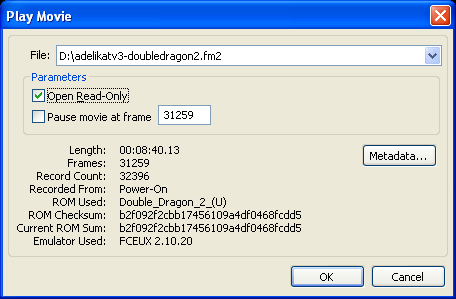
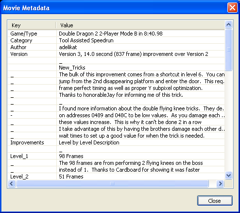

Movies
Introduction
A movie file is a file which contains data needed to reconstruct actions in a game. In most emulators, the movie files consist of simply the buttons that were pressed during the game. Because the emulation is completely predictable (deterministic), it will always play back the same way.
Unless the movie starts from the console power-on or from reset, the movie file might also contain a savestate that loads the beginning point of the game. Movie files don’t contain any sound or image data. Such data is not needed, because the emulator can reconstruct it during movie playback.
Movie files in FCEUX are .fm2 files. The file format is unique to FCEUX and not compatible with other movie recording versions of FCE Ultra. Movie files from other versions (.fcm) can be converted to .fm2 for playback with the .fcm to .fm2 converter.
Movie features in FCEUX are designed specifically for making Tool-assisted Speedruns.
For more information visit TASVideos.
Playing Back Movies
 (Windows)To play back a recorded movie, open the ROM. Then select "Replay Movie" in the File Menu. A movie dialog box will open where you can select the movie file.
Read-only
You can also select whether the movie is in Read-only mode. If a movie is in read-only mode, the movie file can not be altered in any way. If you make a savestate while playing the movie and load that state, the playback will simply "rewind" to that state. If the movie is not in read-only, however, loading a state will set the movie to record mode and begin recording from that savestate.
Pause movie at frame
You can also select "Pause movie at frame" x. If selected, the movie will automatically pause when reaching the frame selected (the default is the last frame of the movie).
Recording Movies

(Windows)
To record a movie, open a ROM. Then simply select "Record Movie" in the File > Movie Menu.
You will be prompted to name the file and to select where to record from.
Selecting "Start" will begin the recording from a Power-on (Hard Reset).
If you select "Now", a savestate will be made at your current location in the game, and the movie will begin recording from there.
If you select browse, you will be prompted to find a preexisting savestate file to begin recording from.
Savestates, Slowdown, and Frame Advance
At anytime while recording, you can make a savestate. This is a snapshot of the game's current memory contents. Once a savestate is made, it can be loaded with the loadstate command. This will return the movie back to the spot in the game where the savestate was made. This can be used to undo mistakes or to test different strategies for a particular segment.
(Windows users - the default key for making a savestate is "I" and the default key for loading a state is "P". Both of these can be assigned under the Map Hotkeys Menu). Both can also be access through the File > Savestate Menu.
Tool Assisted movies take advantage of slowing the emulator down in order to increase precision of the movie making process. Navigating to NES > Emulation Speed > Slow down or pressing the "-" key will slow down emulation. NES > Emulation Speed > Speed up or the "=" will speed it up. (These can be re-mapped. For windows users, see the Map Hotkeys Menu).
Even greater precision can be made using the frame advance key. Pressing the frame advance key will pause emulation and advance it a single frame (~1/60th of a second NTSC ). By holding down input and pressing the frame advance key, it will record that input for that particular frame.
"Bullet Proof Rerecording"
All savestates made during movie recording contain the movie information up to the frame of the savestate. When a savestate is loaded, the movie file in the savestate is also loaded. This is referred to as "Bullet Proof Rerecording" because it prevents possible desyncs and lost data from improper/out of order savestate loading.
Read only
You can select read-only when playing a movie. You can also toggle the read-only status by navigating to File > Movie > Read only. In read-only mode a movie can not be edited. Loading a savestate will take the movie to that point in the movie and stay in playback mode.
In read-write status, loading a state will change a movie from playback mode to record mode.
Resuming Recording
You can resume recording a previous movie by playing back the movie, setting the record status to read+write, and then loading a state.
Play Movie from Beginning
At any point while recording or playing back a movie, you can navigate to File > Movie > Play Movie from Beginning. This will set the movie to read only status and reset playback to frame 0.
Frame Counter
The Frame counter displays what frame the movie is currently on. If the movie is playing in read-only mode, it will also display the total number of frames in the movie. The default key for toggling the Frame Counter display is the "." (period) key. (This can be re-mapped in the Map Hotkeys Menu).
Frame Advance
The frame advance key ("backlash" key by default. Re-mappable under the Map Hotkeys Menu) will advance the game by a single frame and then pause the game. If the hotkey is held down, it will auto advance quickly through the game.
This is a critical tool when perfecting input in movie recording.
Metadata
When you record a new movie via the record movie dialog there is an author field. This sends the info to the .fm2 file in the form of comment Author [author name] (see .fm2).
Comments
Any line in the .fm2 that starts with "comment" is known as metadata. You can include any number of comments manually by editing the .fm2 file with any text editor.
(Windows)
On the replay movie dialog, clicking the metadata button will display all metadata in a separate dialog box
(If a movie is currently loaded you can also access the meta-data by right-clicking and selecting Metadata in the context menu).
Subtitles
FCEUX supports subtitles in the .fm2 file format. Subtitles will be displayed on the screen automatically as a movie plays. You can turn on/off subtitles Windows users can by navigating to Config > Movie Options > Display movie subtitles (see Movie options).
For adding subtitles to a movie see the .fm2 documentation.